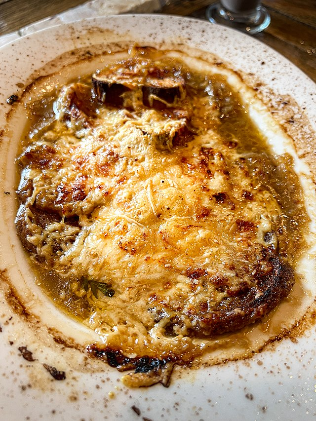

french onion soup
take me back to the recipe list !
2 soup recipes ! who would have thought . this one has a ton of flavor and is super filling !

French onion soup usually calls for putting the bread in the soup , but you don't have to if you don't like that !
ingredients
-
0.5 cup of unsalted butter
-
2 tablespoons of olive oil
-
4 cups of sliced onions
-
5 cups of beef broth
-
2 tablespoons of dry sherry
-
1 teaspoon of dried thyme
-
salt and pepper (to taste)
-
4 slices of French bread
-
4 slices of provolone cheese
-
2 slices of Swiss cheese, diced!
-
1/4 cup of grated Parmesan cheese
instructions
- gather ingredients in a big pile
- melt butter with olive oil in an 8-quart stock pot over medium heat .
add onions to butter and continually stir until tender and translucent .
do NOT brown the onions .
- add beef broth , sherry , and thyme . season with salt and pepper .
let simmer for 30 minutes .
- preheat oven's broiler
- ladle soup into oven-safe serving bowls and place one slice of bread on top of each
(bread may be broken into pieces if you prefer) . layer each slice of bread
with a slice of provolone , 0.5 slice diced Swiss and 1 tablespoon Parmesan cheese .
- place bowls on a cookie sheet and broil in the preheated oven until cheese bubbles and browns slightly ,
2 to 3 minutes .
- eat your delicious soup !
this one is a bit more complicated , but it's worth it !